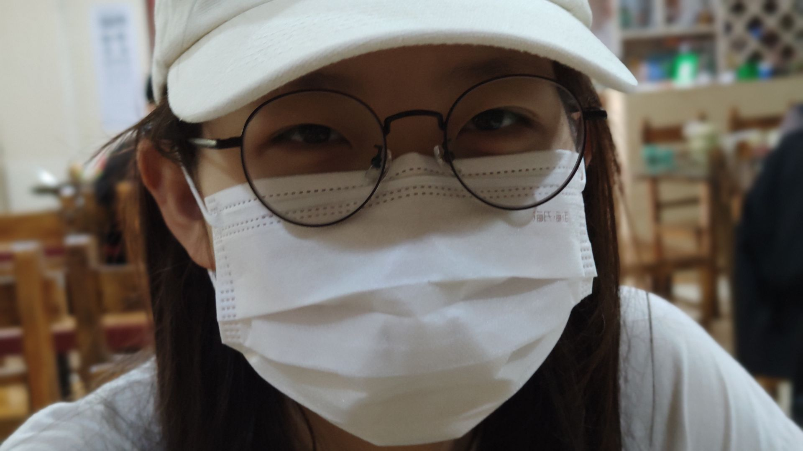
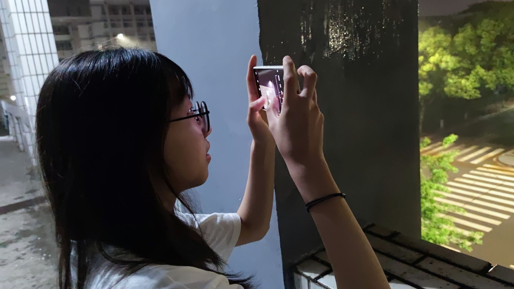
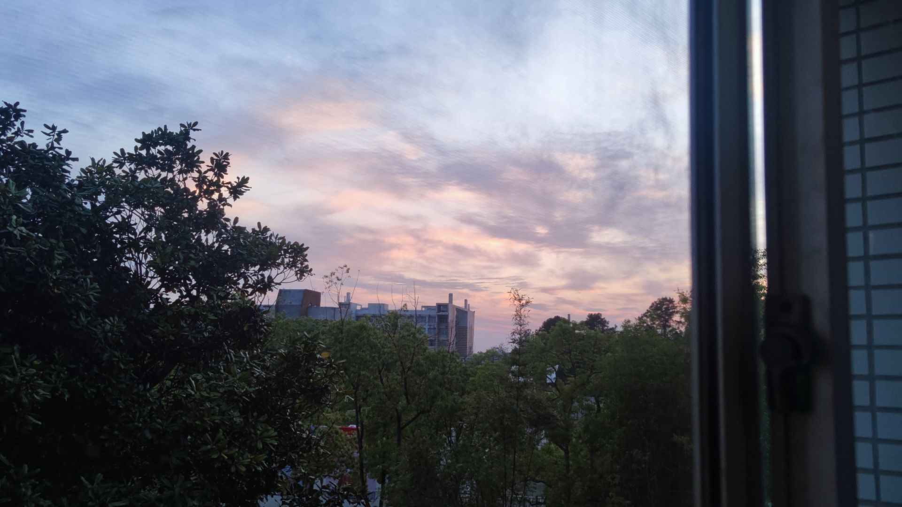
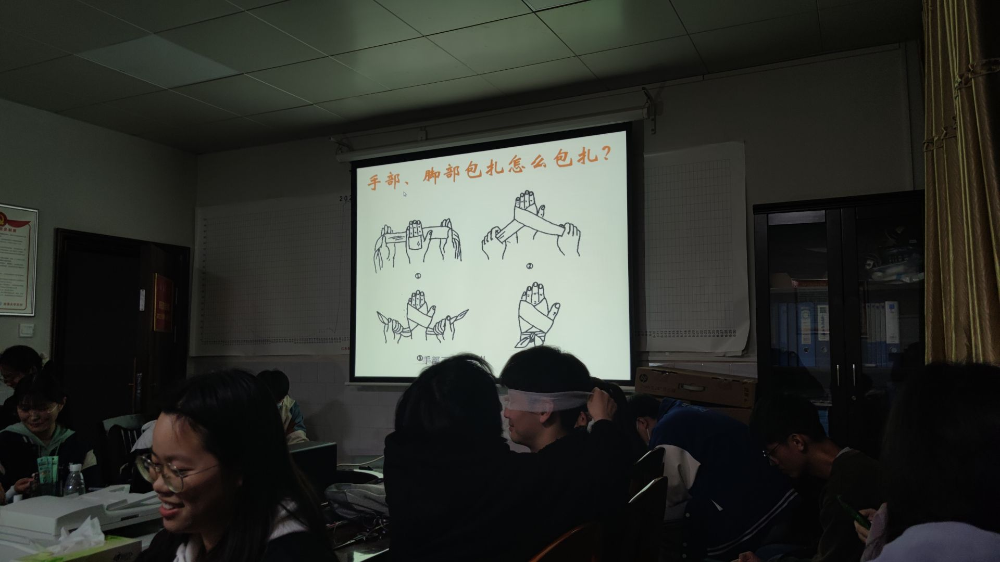
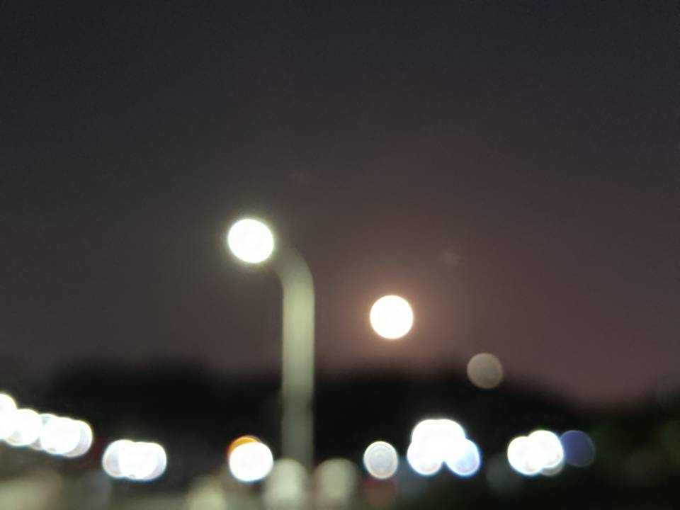

<!DOCTYPE html>
<html>
<head>
    <meta charset="UTF-8" />
<body
        background= "/image7.jpg";
        style="
background-repeat: repeat;
background-attachment: scroll;
background-size: cover;
">
</body>
</html>


<head>
    <meta charset="UTF-8">
    <meta name="author" content="杨景森">
    <title>For 宋伊淼</title>
    <style type="text/css">
        body{background-color: #646a68;}
    </style>
    <script>
        window.onload=function(){
            var oBtn=document.getElementsByTagName("input")
            oBtn[0].onclick=function(){
                alert("最爱全世界最好看的淼淼(≧▽≦)");
            };
        }
    </script>
    <style type="text/css">
        #div2{
            font-size: 20px;
            text-align: center;
            margin: 30px auto;
        }
        .imgBox{
            border-top: 5px solid rgb(169, 169, 169);
            /*border-bottom: 5px solid cadetblue;*/
            width: 1000px;
            height: 600px;
            margin: 0 auto;
        }
        .imgBox img{
            width:1000px;
            height: 650px;
            margin: 0 auto;
            padding-top: 30px;
        }
        .img1{
            display: none;
        }
        .img2{
            display: none;
        }
        .img3{
            display: none;
        }
        .img4{
            display: none;
        }
        .img5{
            display: none;
        }
        .img6{
            display: none;
        }
        #words{
            text-align: center;
            font-size: 40px;/*字体大小*/
            line-height: 100px;
            font-weight: 700;
            margin: 10px auto;
        }
        #mus{
            text-align: center;
            margin: 10px auto;
        }
    </style>
</head>
<body>
<div id="words">yjs每天都要好好爱sym啊</div>
<div id="mus">
    <audio controls autoplay>
        <source src="music.mp3">
    </audio>
</div>
<div id="div2">
    <form method="POST">
        <input colr id="sym" type="button" style="width: 400px;height: 100px;" value="点开我哦^-^">
    </form>
</div>
<div class="imgBox">
    
    
    
    
    
    
</div>
<script type="text/javascript">
    var index=0;
    //效果
    function ChangeImg() {
        index++;
        var a=document.getElementsByClassName("img-slide");
        if(index>=a.length) index=0;
        for(var i=0;i<a.length;i++){
            a[i].style.display='none';
        }
        a[index].style.display='block';
    }
    setInterval(ChangeImg,2600);
</script>
</body>
</html>


<!--/*-&#45;&#45;&#45;&#45;&#45;&#45;&#45;&#45;字幕start&#45;&#45;&#45;&#45;&#45;&#45;&#45;&#45;*/-->
<html>
<head>
    <meta charset="UTF-8">
    <title>marquee</title>
    <style>
        marquee {
            font-weight: bolder;
            font-size: 40px;
            color: #dcdcdc;
            margin-top: 100px;
        }
    </style>
</head>
<body>
<marquee  height:100px direction="up" behavior="scroll">
    <p>
        &nbsp;&nbsp;&nbsp;&nbsp;4月15日，正在上英语课的我饶有兴致地听老师讲课，拍一下造句作业的词汇（虽然没做），下午数电课如同坐牢，
        已经出现漏洞的我依然试图跟上她的思路，如临大敌般度过了下午，然后在逸夫楼开始写作业，一旁的xd看到了一个喜欢的女生但是又不敢上去要联系方式，
        挣扎半天在那里抓耳挠腮，让我这个倒数第一给倒数第二讲题折腾半天，等到我收拾东西走了还在那里抓耳挠腮。
    </p>
    <br>

    <p>
        &nbsp;&nbsp;&nbsp;&nbsp;和朋友吃完鸡公煲就要去上选修课了，蹲点选的周五晚上就是不想周六周日再去了，选的三班就是我神机妙算到1、2肯定大家都先选，
        相比之下3的压力就小很多。我们到的很早，于是就开始了一局紧张刺激的王者荣耀。随着人越来越多，我们相互报点交流的声音 也小了下来。至此，我都不知道接下来会发生什么。“啊！！不讲武德4个人来抓我一个adc”，低头太久脖子酸了一抬头就看到
        坐在对面的你。虽然隔着一个教室，但我想，“真好看啊”（maybe距离产生美？），于是就偷看一眼你然后再看一眼屏幕。
    </p>
    <br>


    <p>
        &nbsp;&nbsp;&nbsp;&nbsp;上课的时候眼神总来一个180°回旋，要先看到你再扫到黑板。第一节课下课，我迷路了（ 迷失在你的美貌里）。
        我心急如焚，想第二节课坐的离你近一些。终于苦找半天找到路了，但可惜已经满了，我发现你坐在了第二排，前面正好又空位
        但是主动坐第一排不是我的风格，马护士长说：“就坐这吧”，我假装叹了口气，但却迫不及待地坐了第一排。
    </p>
    <br>


    <p>
        &nbsp;&nbsp;&nbsp;&nbsp;“有人要吸氧吗， “，我其实，很想试一下，因为前几天听了谭老师的建议给爷爷买了个制氧机，但是我又不是很想举手，马老师说：”
        就你把“，大家都在笑，我其实内心乐不可支地坐上去了。”难道想什么就能实现吗？我今天运气爆炸啊。“，那好，我想让
        那个女生做我女朋友。想到这里，我于是不敢看你，全程把眼神扭到一边，回到座位上却又高兴地晃着板凳。当我在纠结要不要
        要你联系方式，微信还是QQ，我朋友在这会不会尴尬，万一被拒绝了什么办（从来没要过女生联系方式），大脑瞬间超频开始思考
        下了课你朝我走来，才刚刚跑出来第二个问题的解应该是要微信，（因为实在是太复杂太多变量了），我有些茫然不知所措，
    </p>
    <br>

    <p>
        &nbsp;&nbsp;&nbsp;&nbsp;”同学可以加个微信吗？“     ”**（国粹）！可以可以，太可以了！**的天助我也，都到了这个份上我一定要让她做我女朋友“
        于是手忙脚乱地加了之后，就已经下定决心，我一定要追这个女孩子。但是我项目开发刚刚告一段落有难得的空闲，那么几周之后呢?
        所以要速战速决，但是怎么可能那么快，至少也要几个月才能开口，唉！长叹一口气。
    </p>
    <br>


    <p>
        &nbsp;&nbsp;&nbsp;&nbsp; 4月17日。我苦等一个上午，你珊珊来迟。于是，我恶向胆边生，饱暖思淫欲，先是碰碰手“好，没有反应”，然后握一下“好
        ！！还没有反抗”，“他*的（国粹），我不做人了”于是我进行了人生中最胆大妄为无耻下流的决定，甚至开始了付费内容，
        再不行动万一跑了怎么办“同志们，胜败在此一举”，当你把我喊出去的时候，我以为我要G了，但是你答应了！
    </p>
    <br>


  </marquee>

    </body>

    </html>
    <!--/*---------字幕end--------*/-->
